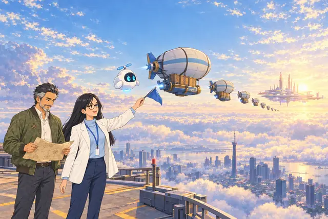

Land It Well, Dewi! · EP 5
The Great Migration
CAF Adopt: migrate, modernize, build cloud-native
Text version of the comic.

📍 Contoso rooftop · launch day
Phase 4: Adopt. Time to move workloads, improve them, or build new ones.
BayuAdopt has three tracks in CAF: migration, modernization and cloud-native.
DewiAnd the harbor is ready for the first ships!
Adopt: three tracks
- The migration plan and the cloud-native plan both list an Azure landing zone as a prerequisite.
- Two migration methods: with downtime, or with near-zero downtime.
DewiOur first wave is small on purpose, right?
BayuRight. Learn: start with simpler workloads to reduce risk. And always set rollback criteria and procedures before any migration.
First up: the reporting server, a rehost with Azure Migrate.
Rehost with Azure Migrate
- Discover: the Azure Migrate appliance continuously discovers servers and sends their metadata to the project.
- Assess: readiness, right-sizing, cost estimates and dependencies, ready for a business case.
- Replicate: initial replication, then delta replication keeps Azure in sync.
- Test migration: a test VM starts in an isolated virtual network. Check it, then clean up the test.
- Migrate: cut over in the workload landing zone, then complete the migration.
- Optimize (Advisor, backup, alerts), then decommission the source server.
✎ Stage names follow Learn's agentless VMware tutorial. Other sources (Hyper-V, physical) differ in detail.
DewiThe test migration doesn't touch production at all?
SoraIt runs in an isolated virtual network. You test, clean up the test, then do the real migration.
BayuAfter cutover we optimize, and then we decommission the old server, properly. Stakeholder approval, licenses, data, documentation.
DewiAnd the shop? It's moving to App Service. Is that migration or modernization?
SoraModernization. Learn: migration changes where a workload runs. And "a rehost migration alone isn't modernization."
BayuLearn's advice for modernizing: make the least amount of change needed to reach the outcome.
DewiSmall steps, clear rollback, then celebrate!
PipPip! First ship has landed!
Checkpoint: Where does Azure Migrate run a test migration?
- Directly in production
- In an isolated virtual network, so production isn't touched
- On the source server in the datacenter
Answer: In an isolated virtual network, so production isn't touched. The VMware migration tutorial runs the test in an isolated virtual network, then cleans it up before the real migration.